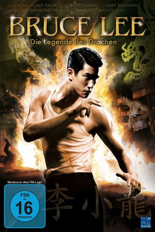

#2100 Bruce Lee - Die Legende des Drachen
Alternativ: Young Bruce Lee (Englischer Titel)
 
 IMDB-Wertung: 6.5 / 10
IMDB-Wertung: 6.5 / 10  Metascore: 0
Metascore: 0 
"Bruce Lee, My Brother" ist ein Biopic über einen der bekanntesten Martial Arts Kämpfer der Welt. Der Film erzählt die Lebensgeschichte des sino-amerikanischen Schauspielers und Kampfkünstlers Bruce Lee, von seinen Kindertagen in China bis zur großen Karriere in den USA. Es werden viele dramatische Details aus dem Leben des Filmstars gezeigt, so dass der Zuschauer einen reinen Blick auf die Geschichte eines der größten Actionstars aller Zeiten bekommt. Die Rolle von Bruce Lee wird von seinem jüngeren Bruder übernommen.
Jahr: 2010
Dauer: 129 Minuten
FSK:
Land: Hong-Kong Studio: New KSMTonspuren: DTS - ,
Untertitel: Deutsch,
Auflösung: 1080p (1920x824) Größe: 7598 MB
Genre: Drama, Biographie
Regisseur: Manfred Wong, Wai Man Yip
Drehbuch: Manfred Wong
Soundtrack: Kwong Wing Chan
Darsteller:
 Tony Ka Fai Leung als Lee Hoi-chuen
Tony Ka Fai Leung als Lee Hoi-chuen- Jin Auyeung als Unicorn Chan
- Aarif Rahman als Bruce Lee
- Jennifer Tse als Cho Manyee
 Siu-Fai Cheung als Cho Tat-wah
Siu-Fai Cheung als Cho Tat-wah- Ash Gordey als Charlie Owen's boxing coach , uncredited
- Christy Chung als Grace Lee
 Kar Lok Chin als Shek Kin
Kar Lok Chin als Shek Kin- Kristy Yang als Mui Yee
 Michelle Ye als Auntie Eight
Michelle Ye als Auntie Eight- Alex Man als Ng Cho-fan
- Jia Song als Yu So-chow
- Lawrence Cheng als Gao Luquan
- Anders Nelsson als Father Andrew
- Alex Yen als Charlie Owen
- Wilfred Lau als Ngai Kwan-chi
- Hanjin Tan als Skinny
- Tat-Ming Cheung als Feng Feng
- Heung Kam Lee als Bruce's grandma
- Leanne Ho als Agnes Lee
- Johnson Yuen als Leung Sing-bo
- Mi Gong als Man Lan
Datei: X:\HD-Eastern-Collections\Bruce Lee\Bruce Lee - Die Legende des Drachen (2010, FSK, 1920x824).mkv seit 02.10.2015
Festplatte: HD Eastern+Western
 Es gibt insgesamt 12 Filme in der Gruppe 'HD-Eastern-Collections\Bruce Lee'
Es gibt insgesamt 12 Filme in der Gruppe 'HD-Eastern-Collections\Bruce Lee'